🚦 Дорожные знаки - Code de la Route Belgique
91
Изображений
17
Типов знаков
27
Статей
📋 Article 3. Agents qualifiés
Правило:
Les agents qualifiés pour veiller à l'exécution des lois relatives à la police de la circulation routière, ainsi que des règlements pris en exécution de celles-ci, sont: 1°le personnel du cadre opérationnel de la police fédérale et de la police locale; 1°/1le personnel du cadre administratif et lo...
Les agents qualifiés pour veiller à l'exécution des lois relatives à la police de la circulation routière, ainsi que des règlements pris en exécution de celles-ci, sont: 1°le personnel du cadre opérationnel de la police fédérale et de la police locale; 1°/1le personnel du cadre administratif et lo...
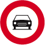
C5
art3_C5_1.png
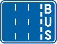
F17
art3_F17_2.png
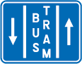
F18
art3_F18_3.png
img4
art3_img4_4.png
img5
art3_img5_5.png
📋 Article 6. Valeur des injonctions des agents qualifiés, de la signalisation routière et des règles de circulation
Правило:
6.1.Les injonctions des agents qualifiés prévalent sur la signalisation routière ainsi que sur les règles de circulation. 6.2.La signalisation routière prévaut sur les règles de circulation. 6.3.Le fonctionnement des signaux lumineux de circulation à un endroit déterminé y rend sans effet les sign...
6.1.Les injonctions des agents qualifiés prévalent sur la signalisation routière ainsi que sur les règles de circulation. 6.2.La signalisation routière prévaut sur les règles de circulation. 6.3.Le fonctionnement des signaux lumineux de circulation à un endroit déterminé y rend sans effet les sign...

img1
art6_img1_1.png

img2
art6_img2_2.png
📋 Article 9. Place des conducteurs sur la voie publique
Правило:
9.1.1.Quand la voie publique comporte une chaussée, les conducteurs doivent emprunter celle- ci. 9.1.2. 1°Lorsque la voie publique comporte une piste cyclable praticable, indiquée par des marques routières telles que prévues à l'article 74, les cyclistes et les conducteurs de cyclomoteurs à deux r...
9.1.1.Quand la voie publique comporte une chaussée, les conducteurs doivent emprunter celle- ci. 9.1.2. 1°Lorsque la voie publique comporte une piste cyclable praticable, indiquée par des marques routières telles que prévues à l'article 74, les cyclistes et les conducteurs de cyclomoteurs à deux r...
D7
art9_D7_1.png
D9
art9_D9_2.png

D10
art9_D10_3.png
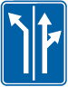
F13
art9_F13_4.png

F15
art9_F15_5.png
D1
art9_D1_6.png
📋 Article 12. Obligations de céder le passage
Правило:
12.1.Tout usager doit céder le passage aux véhicules sur rails; à cette fin, il doit s'écarter de la voie ferrée dès que possible. 12.2.Le conducteur abordant un carrefour doit redoubler de prudence pour éviter tout accident. 12.3.1.Tout conducteur doit céder le passage à celui qui vient à sa droi...
12.1.Tout usager doit céder le passage aux véhicules sur rails; à cette fin, il doit s'écarter de la voie ferrée dès que possible. 12.2.Le conducteur abordant un carrefour doit redoubler de prudence pour éviter tout accident. 12.3.1.Tout conducteur doit céder le passage à celui qui vient à sa droi...
img1
art12_img1_1.png

img2
art12_img2_2.png
📋 Article 16. Dépassement
Правило:
16.1. Le dépassement n'est à considérer qu'à l'égard des conducteurs en mouvement. 16.2.Lorsque les conducteurs se conforment aux indications des signaux F13 et F15 ou lorsque la circulation s'effectue conformément aux dispositions de l'article 9.4 ou 9.5, le fait que les véhicules d'une bande ou d...
16.1. Le dépassement n'est à considérer qu'à l'égard des conducteurs en mouvement. 16.2.Lorsque les conducteurs se conforment aux indications des signaux F13 et F15 ou lorsque la circulation s'effectue conformément aux dispositions de l'article 9.4 ou 9.5, le fait que les véhicules d'une bande ou d...

img1
art16_img1_1.png
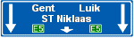
img2
art16_img2_2.png
📋 Article 17. Interdiction de dépasser
Правило:
17.1.Le dépassement par la gauche est interdit lorsque le conducteur ne peut apercevoir les usagers venant en sens inverse à une distance suffisante pour effectuer le dépassement sans risque d'accident. 17.2.Le dépassement par la gauche d'un véhicule attelé, d'un véhicule à moteur à deux roues ou d...
17.1.Le dépassement par la gauche est interdit lorsque le conducteur ne peut apercevoir les usagers venant en sens inverse à une distance suffisante pour effectuer le dépassement sans risque d'accident. 17.2.Le dépassement par la gauche d'un véhicule attelé, d'un véhicule à moteur à deux roues ou d...
img1
art17_img1_1.png
img2
art17_img2_2.png
📋 Article 22bis. Circulation dans les zones résidentielles et dans les zones de rencontre
Правило:
Dans les zones résidentielles et dans les zones de rencontre: F12aF12b 1°les piétons peuvent utiliser toute la largeur de la voie publique; les jeux y sont également autorisés; 2°les conducteurs ne peuvent mettre les piétons en danger ni les gêner; au besoin, ils doivent s'arrêter. Ils doivent en...
Dans les zones résidentielles et dans les zones de rencontre: F12aF12b 1°les piétons peuvent utiliser toute la largeur de la voie publique; les jeux y sont également autorisés; 2°les conducteurs ne peuvent mettre les piétons en danger ni les gêner; au besoin, ils doivent s'arrêter. Ils doivent en...
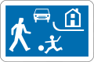
img1
art22bis_img1_1.png
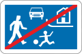
img2
art22bis_img2_2.png
📋 Article 22ter. Circulation sur les voies publiques munies de dispositifs surélevés
Правило:
22ter.1.Sur les voies publiques munies de dispositifs surélevés, qui sont annoncés par les signaux A14 et F87, ou qui, aux carrefours sont seulement annoncés par un signal A14 ou qui sont situés dans une zone délimitée par les signaux F4a et F4b: 1°les conducteurs doivent approcher ces dispositifs ...
22ter.1.Sur les voies publiques munies de dispositifs surélevés, qui sont annoncés par les signaux A14 et F87, ou qui, aux carrefours sont seulement annoncés par un signal A14 ou qui sont situés dans une zone délimitée par les signaux F4a et F4b: 1°les conducteurs doivent approcher ces dispositifs ...
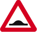
img1
art22ter_img1_1.png

img2
art22ter_img2_2.png
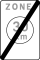
img3
art22ter_img3_3.png
img4
art22ter_img4_4.png
📋 Article 22quinquies. Circulation sur les chemins réservés aux piétons, cyclistes, cavaliers et conducteurs de speed pedelecs
Правило:
22quinquies.1.Ne peuvent circuler sur ces chemins que les catégories d'usagers dont le symbole est reproduit sur les signaux placés à leurs accès. Toutefois, peuvent également emprunter ces chemins: - (abrogé) - les véhicules prioritaires visés à l'article 37, lorsque la nature de leur mission le...
22quinquies.1.Ne peuvent circuler sur ces chemins que les catégories d'usagers dont le symbole est reproduit sur les signaux placés à leurs accès. Toutefois, peuvent également emprunter ces chemins: - (abrogé) - les véhicules prioritaires visés à l'article 37, lorsque la nature de leur mission le...
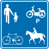
img1
art22quinquies_img1_1.png
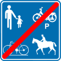
F101A
art22quinquies_F101A_2.png
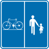
img3
art22quinquies_img3_3.png
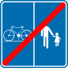
img4
art22quinquies_img4_4.png
📋 Article 22sexies. Circulation dans les zones piétonnes
Правило:
F103F105 22sexies.1.L'accès aux zones piétonnes est réservé aux piétons. Toutefois: 1°peuvent accéder à ces zones: a)(abrogé) b)les véhicules de surveillance, de contrôle et d'entretien de cette zone et les véhicules affectés au ramassage des immondices; c)les véhicules prioritaires visés à l'...
F103F105 22sexies.1.L'accès aux zones piétonnes est réservé aux piétons. Toutefois: 1°peuvent accéder à ces zones: a)(abrogé) b)les véhicules de surveillance, de contrôle et d'entretien de cette zone et les véhicules affectés au ramassage des immondices; c)les véhicules prioritaires visés à l'...
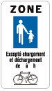
img1
art22sexies_img1_1.png
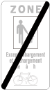
img2
art22sexies_img2_2.png
📋 Article 22octies. Circulation sur les chemins réservés aux véhicules agricoles, aux piétons, cyclistes, cavaliers et conducteurs de speed pedelecs
Правило:
22octies.1.Outre les catégories d'usagers dont le symbole est reproduit sur les signaux placés à leur accès, les catégories d'usagers suivantes peuvent circuler sur ces chemins: a)les véhicules se rendant ou venant des parcelles y afférant; b)les tricycles et quadricycles non motorisés; c)les véh...
22octies.1.Outre les catégories d'usagers dont le symbole est reproduit sur les signaux placés à leur accès, les catégories d'usagers suivantes peuvent circuler sur ces chemins: a)les véhicules se rendant ou venant des parcelles y afférant; b)les tricycles et quadricycles non motorisés; c)les véh...
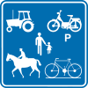
img1
art22octies_img1_1.png
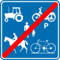
img2
art22octies_img2_2.png
📋 Article 25. Interdiction de stationnement
Правило:
25.1.Il est interdit de mettre un véhicule en stationnement: 1°à moins de 1 mètre tant devant que derrière un autre véhicule à l'arrêt ou en stationnement et à tout endroit où le véhicule empêcherait l'accès à un autre véhicule ou son dégagement; 2°à moins de 15 mètres de part et d'autre d'un pann...
25.1.Il est interdit de mettre un véhicule en stationnement: 1°à moins de 1 mètre tant devant que derrière un autre véhicule à l'arrêt ou en stationnement et à tout endroit où le véhicule empêcherait l'accès à un autre véhicule ou son dégagement; 2°à moins de 15 mètres de part et d'autre d'un pann...
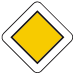
img1
art25_img1_1.png
img2
art25_img2_2.png
img3
art25_img3_3.png
📋 Article 26. Stationnement alterné semi-mensuel dans toute une agglomération
Правило:
26.1.Le stationnement alterné semi-mensuel est obligatoire sur toutes les chaussées d'une agglomération lorsque le signal E11 est placé au-dessus des signaux marquant le commencement de cette agglomération. E11 Le stationnement sur la chaussée n'est alors autorisé du 1 au 15 mois que du côté des i...
26.1.Le stationnement alterné semi-mensuel est obligatoire sur toutes les chaussées d'une agglomération lorsque le signal E11 est placé au-dessus des signaux marquant le commencement de cette agglomération. E11 Le stationnement sur la chaussée n'est alors autorisé du 1 au 15 mois que du côté des i...
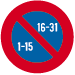
img1
art26_img1_1.png
📋 Article 40bis. Comportement à l'égard des groupes d'enfants, d'écoliers, de personnes handicapées ou âgées
Правило:
40bis.1.Il est interdit aux usagers de couper un groupe d'enfants, d'écoliers, de personnes handicapées ou âgées: 1°soit en rangs, sous la conduite d'un guide;2°soit traversant la chaussée sous la conduite d'une patrouille scolaire, d'un guide ou d'un surveillant habilité; 40bis.2.Les usagers doiv...
40bis.1.Il est interdit aux usagers de couper un groupe d'enfants, d'écoliers, de personnes handicapées ou âgées: 1°soit en rangs, sous la conduite d'un guide;2°soit traversant la chaussée sous la conduite d'une patrouille scolaire, d'un guide ou d'un surveillant habilité; 40bis.2.Les usagers doiv...

img1
art40bis_img1_1.png
📋 Article 41. Comportement à l'égard des colonnes militaires, des cortèges, groupes de piétons, processions, manifestations culturelles, sportives et touristiques, des courses cyclistes, des épreuves ou compétitions sportives non-motorisées, des groupes de cyclistes, groupes de motocyclistes, des groupes de cavaliers et du personnel des chantiers établis sur la voie publique
Правило:
41.1.Il est interdit aux usagers de couper: 1°un élément de colonne militaire constitué par une troupe en marche ou par un convoi de véhicules dont le mouvement est réglé par des agents qualifiés ou des militaires habilités à cette fin; 2°un cortège, un groupe de piétons, un rassemblement à l'occa...
41.1.Il est interdit aux usagers de couper: 1°un élément de colonne militaire constitué par une troupe en marche ou par un convoi de véhicules dont le mouvement est réglé par des agents qualifiés ou des militaires habilités à cette fin; 2°un cortège, un groupe de piétons, un rassemblement à l'occa...

img1
art41_img1_1.png
📋 Article 42. Piétons
Правило:
42.1.Les piétons empruntent dans l’ordre, et dans la mesure où elles existent les parties accessibles et praticables de la voie publique suivantes : 1° le trottoir ou la partie de la voie publique signalée par le signal D9, D10 ou D11;2° la partie de la voie publique signalée par le signal D13 ;3° ...
42.1.Les piétons empruntent dans l’ordre, et dans la mesure où elles existent les parties accessibles et praticables de la voie publique suivantes : 1° le trottoir ou la partie de la voie publique signalée par le signal D9, D10 ou D11;2° la partie de la voie publique signalée par le signal D13 ;3° ...

img1
art42_img1_1.png
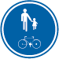
img2
art42_img2_2.png
D11.png
art42_D11.png_3.png
D13.png
art42_D13.png_4.png
📋 Article 43bis. Cyclistes en groupe
Правило:
43bis.1.Le présent article n'est applicable qu'aux cyclistes en groupe comptant de 15 à 150 participants. Les groupes de plus de 50 participants doivent être accompagnés de deux capitaines de route au minimum. Les groupes de 15 à 50 participants peuvent être accompagnés de deux capitaines de route a...
43bis.1.Le présent article n'est applicable qu'aux cyclistes en groupe comptant de 15 à 150 participants. Les groupes de plus de 50 participants doivent être accompagnés de deux capitaines de route au minimum. Les groupes de 15 à 50 participants peuvent être accompagnés de deux capitaines de route a...
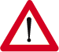
img1
art43bis_img1_1.png
📋 Article 43ter. Motocyclistes en groupe
Правило:
43ter1.Quand les motocyclistes roulent en groupe de deux minimum sur une voie publique divisée en bandes de circulation, ils ne doivent pas circuler en file indienne; ils peuvent être en deux rangs parallèles décalés, en respectant entre eux une distance de sécurité. Si la chaussée n'est pas divisé...
43ter1.Quand les motocyclistes roulent en groupe de deux minimum sur une voie publique divisée en bandes de circulation, ils ne doivent pas circuler en file indienne; ils peuvent être en deux rangs parallèles décalés, en respectant entre eux une distance de sécurité. Si la chaussée n'est pas divisé...
img1
art43ter_img1_1.png
📋 Article 44. Conducteurs et passagers des véhicules
Правило:
44.1.Le conducteur d'un véhicule automobile doit disposer d'un espace dont la largeur ne peut être inférieure à 0,55 mètre. Il ne peut laisser d'autres personnes prendre place à côté de lui que si chacune d'elles dispose d'un espace d'au moins 0,40 mètre de largeur. Le nombre d'occupants d'un véhi...
44.1.Le conducteur d'un véhicule automobile doit disposer d'un espace dont la largeur ne peut être inférieure à 0,55 mètre. Il ne peut laisser d'autres personnes prendre place à côté de lui que si chacune d'elles dispose d'un espace d'au moins 0,40 mètre de largeur. Le nombre d'occupants d'un véhi...
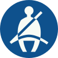
img1
art44_img1_1.png
📋 Article 48bis. Transport des marchandises dangereuses
Правило:
48bis1. Obligation d'emprunter les autoroutes. Doivent, sauf en cas de nécessité, emprunter les autoroutes, les véhicules transportant des marchandises dangereuses au sens de l'Accord européen relatif au transport international des marchandises dangereuses par route (A.D.R.) et ses annexes, signé à...
48bis1. Obligation d'emprunter les autoroutes. Doivent, sauf en cas de nécessité, emprunter les autoroutes, les véhicules transportant des marchandises dangereuses au sens de l'Accord européen relatif au transport international des marchandises dangereuses par route (A.D.R.) et ses annexes, signé à...
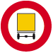
img1
art48bis_img1_1.png
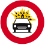
img2
art48bis_img2_2.png
img3
art48bis_img3_3.png
📋 Article 61. Signaux du système tricolore
Правило:
61.1.Les feux des signaux du système tricolore sont circulaires et ont la signification suivante: 1°le feu rouge signifie interdiction de franchir la ligne d'arrêt ou, à défaut de ligne d'arrêt, le signal même; 2°le feu jaune-orange fixe signifie interdiction de franchir la ligne d'arrêt ou, à déf...
61.1.Les feux des signaux du système tricolore sont circulaires et ont la signification suivante: 1°le feu rouge signifie interdiction de franchir la ligne d'arrêt ou, à défaut de ligne d'arrêt, le signal même; 2°le feu jaune-orange fixe signifie interdiction de franchir la ligne d'arrêt ou, à déf...
img1
art61_img1_1.png

img2
art61_img2_2.png
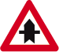
img3
art61_img3_3.png
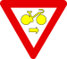
img4
art61_img4_4.png
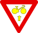
img5
art61_img5_5.png
📋 Article 65. Dispositions générales
Правило:
65.1.Les signaux routiers sont divisés en six catégories: - Signaux de danger; - Signaux relatifs à la priorité; - Signaux d'interdiction; - Signaux d'obligation; - Signaux relatifs à l'arrêt et au stationnement; - Signaux d'indication. 65.2.La signification d'un signal routier peut être comp...
65.1.Les signaux routiers sont divisés en six catégories: - Signaux de danger; - Signaux relatifs à la priorité; - Signaux d'interdiction; - Signaux d'obligation; - Signaux relatifs à l'arrêt et au stationnement; - Signaux d'indication. 65.2.La signification d'un signal routier peut être comp...
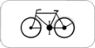
img1
art65_img1_1.png
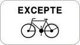
img2
art65_img2_2.png
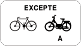
img3
art65_img3_3.png
img4
art65_img4_4.png
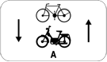
img5
art65_img5_5.png
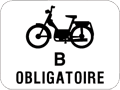
img6
art65_img6_6.png
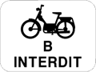
img7
art65_img7_7.png
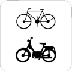
img8
art65_img8_8.png
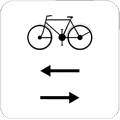
img9
art65_img9_9.png
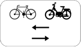
img10
art65_img10_10.png
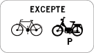
img11
art65_img11_11.png
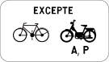
img12
art65_img12_12.png
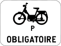
img13
art65_img13_13.png
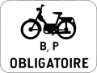
img14
art65_img14_14.png
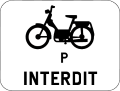
img15
art65_img15_15.png
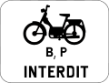
img16
art65_img16_16.png
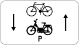
img17
art65_img17_17.png
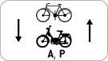
img18
art65_img18_18.png
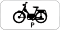
img19
art65_img19_19.png
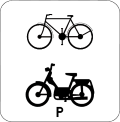
img20
art65_img20_20.png
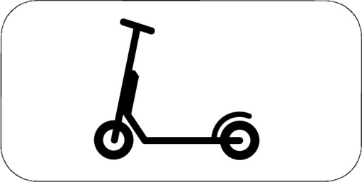
M21
art65_M21_21.png
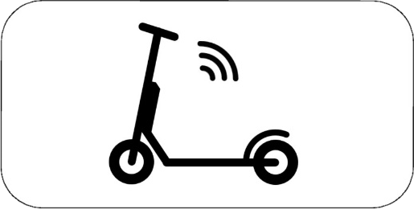
M22
art65_M22_22.png
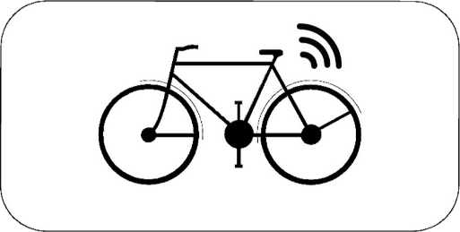
M23
art65_M23_23.png
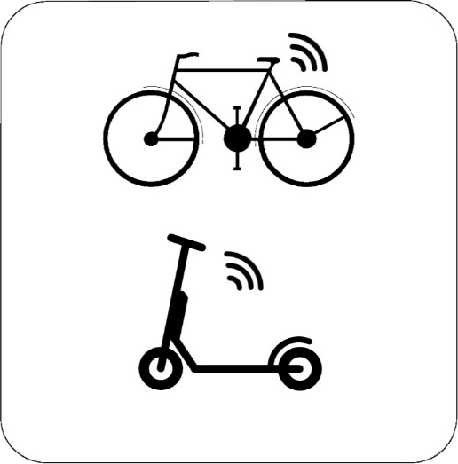
M24
art65_M24_24.png
img25
art65_img25_25.png
img26
art65_img26_26.png
📋 Article 70. Signaux relatifs à l'arrêt et au stationnement
Правило:
70.1.Les signaux relatifs à l'arrêt et au stationnement sont reproduits ci-après. Ils ne peuvent être complétés que par le symbole ou l'une des inscriptions prévus pour chaque catégorie de signaux. 70.2.1.Signaux d'interdiction de stationnement et d'arrêt, signaux de stationnement alterné et signau...
70.1.Les signaux relatifs à l'arrêt et au stationnement sont reproduits ci-après. Ils ne peuvent être complétés que par le symbole ou l'une des inscriptions prévus pour chaque catégorie de signaux. 70.2.1.Signaux d'interdiction de stationnement et d'arrêt, signaux de stationnement alterné et signau...
img1
art70_img1_1.png
img2
art70_img2_2.png
img3
art70_img3_3.png
img4
art70_img4_4.png
📋 Article 72. Marques longitudinales indiquant les bandes de circulation
Правило:
72.1.Ces marques routières sont de couleur blanche et peuvent consister en: 1°une ligne continue;2°une ligne discontinue;3°une ligne continue et une ligne discontinue juxtaposées. 72.2.Une ligne continue signifie qu'il est interdit à tout conducteur de la franchir. En outre, il est interdit de ci...
72.1.Ces marques routières sont de couleur blanche et peuvent consister en: 1°une ligne continue;2°une ligne discontinue;3°une ligne continue et une ligne discontinue juxtaposées. 72.2.Une ligne continue signifie qu'il est interdit à tout conducteur de la franchir. En outre, il est interdit de ci...

img1
art72_img1_1.png
📋 Article 85. Dispositions transitoires
Правило:
85.1.(Abrogé) 85.2.Les signaux repris ci-après peuvent être maintenus jusqu'au 1erjuin 2015. Commencement d'une agglomération. Ce signal doit être placé à droite à chaque accès d'agglomération, il peut être répété à gauche. Fin d'agglomération. 85.3.Les dispositifs de retenue pour enfants qui o...
85.1.(Abrogé) 85.2.Les signaux repris ci-après peuvent être maintenus jusqu'au 1erjuin 2015. Commencement d'une agglomération. Ce signal doit être placé à droite à chaque accès d'agglomération, il peut être répété à gauche. Fin d'agglomération. 85.3.Les dispositifs de retenue pour enfants qui o...
p begin
art85_p_begin_1.png
p einde
art85_p_einde_2.png
📋 Article 22quater. Zones dans lesquelles la vitesse est limitée à 30 km à l'heure
Правило:
Dans les zones délimitées par les signaux routiers F4a et F4b, la vitesse est limitée à 30 km à l'heure. F4aF4b
Dans les zones délimitées par les signaux routiers F4a et F4b, la vitesse est limitée à 30 km à l'heure. F4aF4b
img1
art22quater_img1_1.png

img2
art22quater_img2_2.png
📋 Article 22undecies. Circulation dans les rues scolaires
Правило:
C3 Dans les rues scolaires, la voie publique est réservée aux piétons et aux cycles ainsi qu’aux vélos électriques speed pedelecs.
C3 Dans les rues scolaires, la voie publique est réservée aux piétons et aux cycles ainsi qu’aux vélos électriques speed pedelecs.

C3
art22un_C3_1.png
rue scolaire
art22un_rue_scolaire_2.png